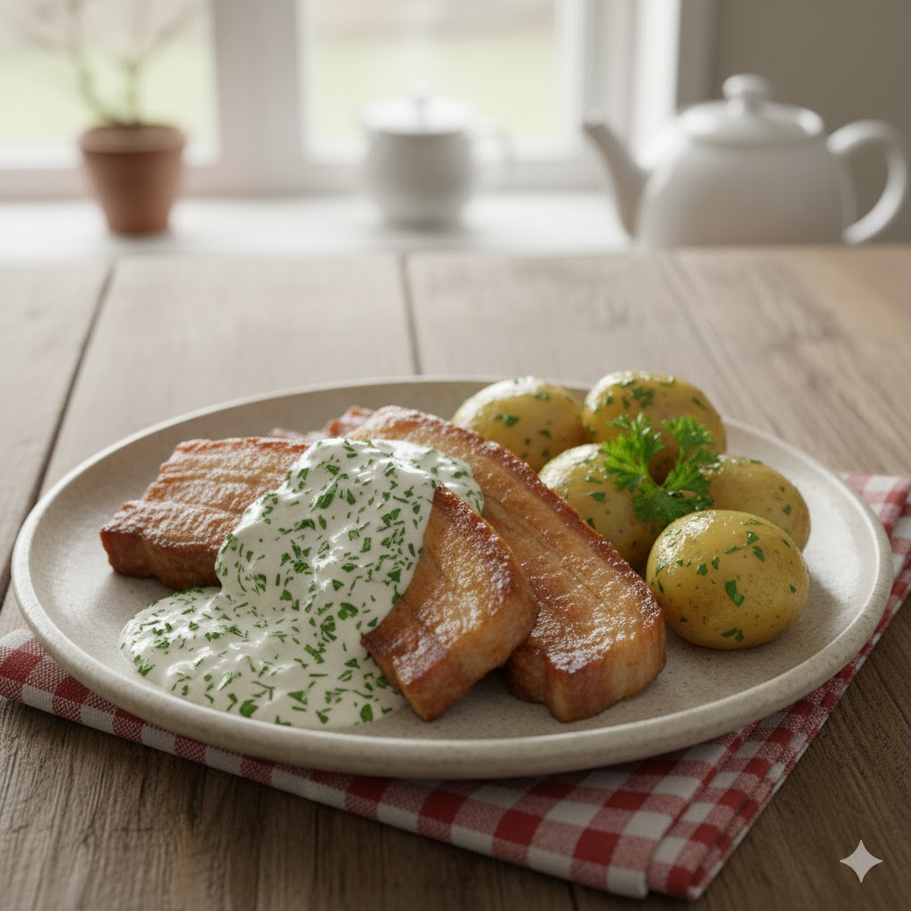

Stegt flæsk - med persillesovs

The Danish national dish
Fried pork with parsley gravy and boiled potatoes.
Ingredients
- Sliced pork.
- Potatoes.
- Parsley.
- Butter.
- Milk.
- Flour.
- Salt & Peber.
- Nutmeg.
Steps
- Boilt potatoes.
- Fry the porkon a pan.
-
Parsley gravy
- Melt butter in a pot.
- Add flour & wisk.
- Pour in the milk, keep wisking!
- Chop and add Parsley.
- U better still be wisking!
- Add salt, pepper & nutmeg to taste.
- Enjoy!
Back...